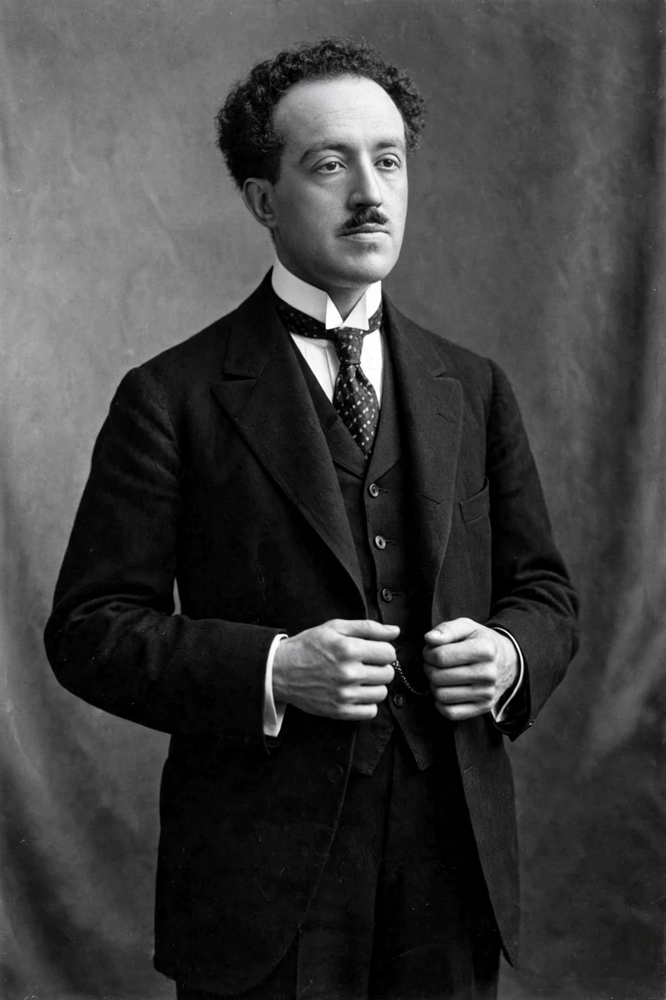

Louis de Broglie
| Born | 15 August 1892, Dieppe, France |
|---|---|
| Died | 19 March 1987 (aged 94), Louveciennes, France |
| Known for | de Broglie wavelength, Wave–particle duality |
| Awards | Nobel Prize in Physics (1929) |

[Image: Photograph of Louis de Broglie in middle age, a tall aristocratic French physicist]Louis Victor Pierre Raymond, 7th duc de Broglie (15 August 1892 – 19 March 1987) was a French physicist and aristocrat who made groundbreaking contributions to quantum theory. In his 1924 PhD thesis, he postulated the wave nature of electrons and suggested that all matter has wave properties, λ = h/p — the de Broglie relation. He won the Nobel Prize in Physics in 1929, the first person ever to receive it for a doctoral thesis.
Electron diffraction experiments (Davisson and Germer; G. P. Thomson, 1927) confirmed the hypothesis within three years, and Erwin Schrödinger's wave mechanics grew directly from it. De Broglie later developed the pilot-wave (de Broglie–Bohm) interpretation, in which particles have definite trajectories guided by a real wave — a forerunner of the hidden-variable theories constrained by Bell's theorem.
Life
De Broglie, of one of France's great ducal families, first studied history before wartime service in wireless telegraphy at the Eiffel Tower turned him to physics. His thesis examiners, unsure of the bold proposal, sent it to Einstein, whose warm endorsement ('he has lifted a corner of the great veil') secured the doctorate. He taught at the Sorbonne for decades, served France's atomic energy establishment, and lived to 94.